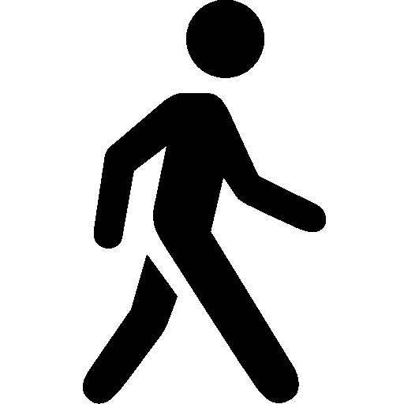

Atenção!
Ponto de Partida do Roteiro Geral
Ponto de Partida do Percurso Estruturas
Ponto de Partida do Percurso Acontecimentos
Ponto de Partida do Percurso Vidas
Olá! Você está no Ponto de Partida de um roteiro histórico diferente. Através de uma caminhada nos entornos da Praça XV, também chamada de Figueira, você poderá descobrir indícios do passado da cidade que não são tão visíveis como as estátuas, os memoriais ou os edifícios tombados por aí.
O roteiro tem 22 pontos de parada, contando com este, que podem ser feitos em aproximadamente 1 hora de caminhada. O roteiro é também dividido em 3 percursos de 7 pontos cada um.
Você pode escolher fazer todo o roteiro ou apenas um dos percursos. Escolha a seguir e se direcione ao endereço indicado em cada uma das opções. Ao final do conteúdo de cada ponto, você será orientado para ir ao próximo através de mapas e indicações. Vamos investigar?
Descubra 21 histórias da cidade, que passam por edificações, vidas, acontecimentos, celebrações e memórias soterradas. Atrás deste poste, encontra-se o primeiro ponto do roteiro geral.
Atrás deste poste, encontra-se o primeiro ponto do roteiro geral.
Descubra 7 histórias relacionadas à edificações e estruturas físicas, algumas que ainda vemos, outras que já não estão mais de pé.
Neste percurso, levaremos você nos espaços que revelam expressões culturais do passado da cidade. Construções que foram demolidas, reformadas, outras que continuam em pé, abandonadas, pouco cuidadas ou talvez ainda em uso. Onde estão os teatros, os cafés, as confeitarias, os cinemas que já fizeram parte da vida social do centro histórico? Onde estão os espaços físicos que foram importante para as sociabilidades urbanas? Porque eles existiram? Em que contexto existiram? De que forma alteraram as experiências das vidas na cidade?
 Dirija-se à Praça Fernando Machado, ao lado deste poste onde estamos, em direção ao Mercado Público. Procure o ponto do percurso estruturas na caixa de luz do Banheiro Público que é pintado na cor verde.
Descubra 7 histórias relacionadas à acontecimentos que modificaram a vida cultural e social da cidade se passaram, mas que não estão necessariamente lembrados em uma edificação.
Muitas vezes não são os prédios ou as pessoas que guardam uma memória que já passou. Encontramos elas também em espaços, esquinas, ruas, calçadas e vazios que uma vez tiveram outros movimentos, celebrações, ocupações. Neste percurso, você poderá explorar acontecimentos que se passaram e que de alguma forma revelam as culturas que formaram as estruturas da cidade.
Vá em direção à Avenida Hercílio Luz, e procure o poste que fica na calçada em frente à Rua Saldanha Marinho com a Rua Nico Luz, próximo das estruturas do terminal de ônibus antigo, na metade da rua.
Descubra 7 histórias relacionadas à pessoas que viveram nos séculos passados, permitindo-nos imaginar suas maneiras de viver.
Neste percurso, você conhecerá algumas vidas, de acordo com as limitações e as possibilidades que tinham em mãos. Sempre que ouvimos as histórias da cidade, inclusive nos nomes das ruas e praças, lembramos daquelas figuras importantes, geralmente homens, que participaram da política ou dos círculos sociais da alta sociedade. Mas esquecemos das outras pessoas que circularam por estas ruas e contribuíram para que aqui chegássemos, de uma forma ou de outra, como nós, que caminhamos nos espaços da cidade e vivemos nossa história.
Vá ao Largo da Alfândega, passando a Praça Fernando Machado aqui ao lado e procure, ao lado do Posto de Polícia e em frente ao prédio da Caixa Econômica Federal, uma estrutura de concreto onde está o primeiro ponto do percurso vidas.
*Todos os textos deste roteiro foram elaborados com base em pesquisas acadêmicas das universidades federais ou estaduais brasileiras feitos por outros pesquisadores e estudantes, sejam elas teses, dissertações ou trabalhos de conclusão de curso, disponíveis em sua maioria online. Também foram consultados livros de historiadores, arquitetos e antropólogos, assim como dados de Acervo. Nenhum destes conteúdos é inédito em relação à pesquisa, pois já foram escritos por outros autores.